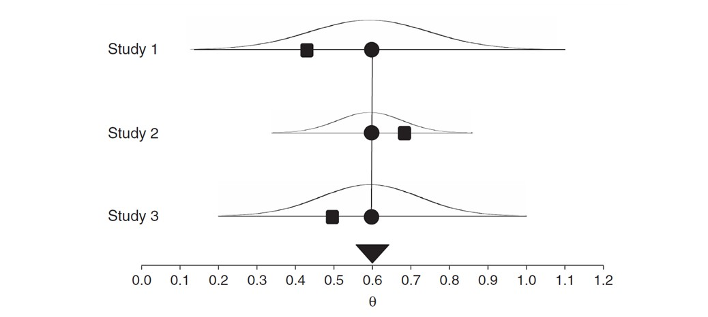
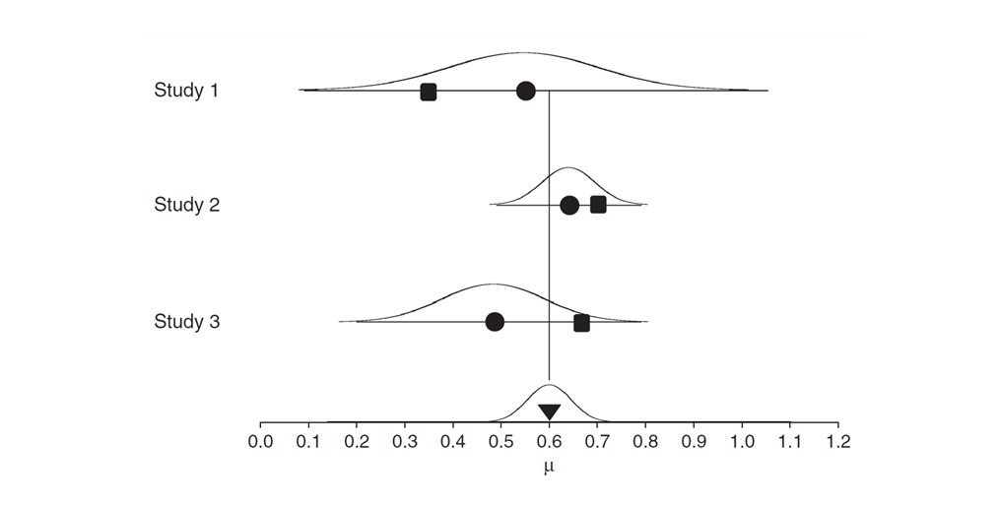
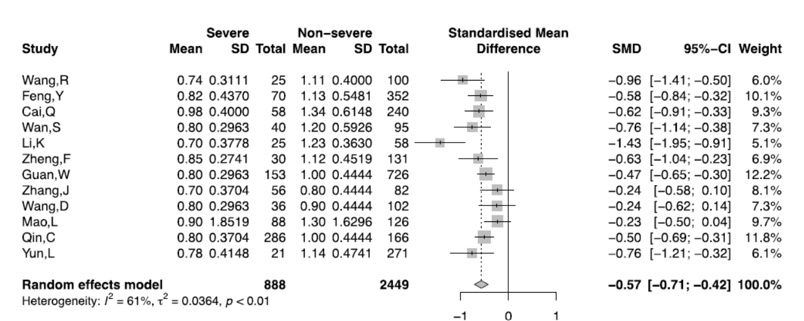
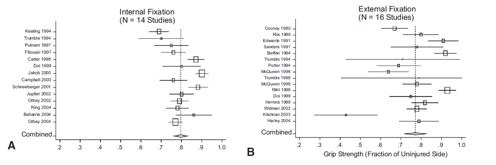
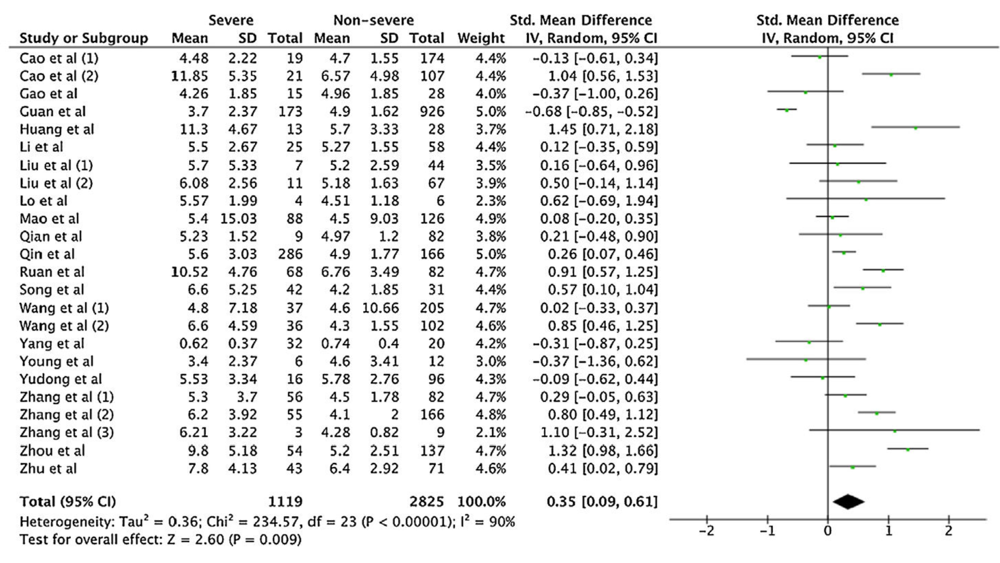
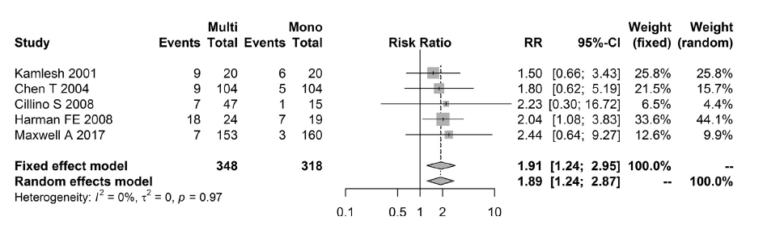
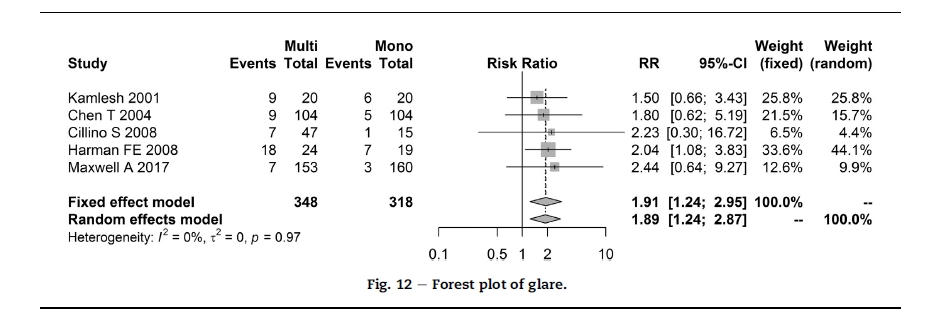
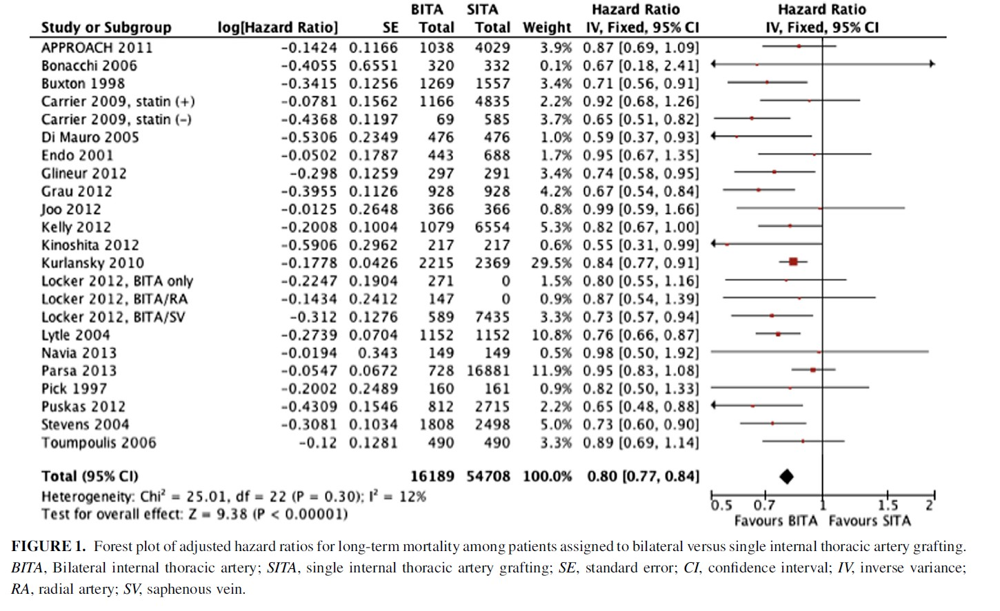
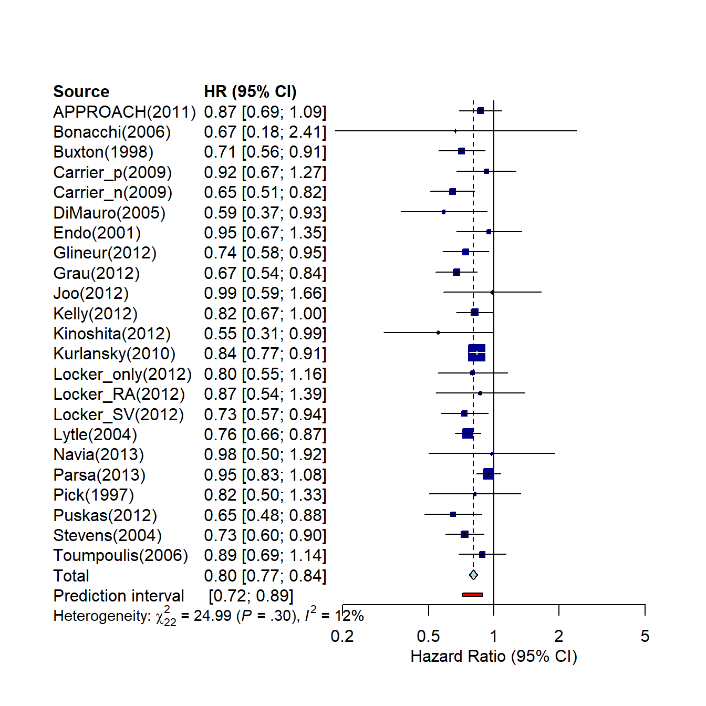

Chapter 3 고정효과모형과 랜덤효과모형
3.1 Fixed vs. Random effect model
3.1.1 고정효과모형과 랜덤효과모형의 의미
메타분석에서 고정효과모형(fixed effect model)과 랜덤효과모형(random effet model)은 실제 효과크기(true effect size)를 어떻게 가정하느냐에 따라 달라진다. 즉 연구자가 평균효과크기를 계산할 때 두 가지 방법 중 어떤 방법을 선택해서 계산하느냐에 따라 평균효과크기의 추정값이 달라지고 그에 따라 평균효과크기의 정밀성(precision)도 달라진다.
| 고정효과모형 | 랜덤효과모형 |
|---|---|
| 가정: 모든 연구의 모집단 효과크기는 동일하다. (모집단 효과크기의 동질성) | 가정: 각 연구는 대상자, 개입방법, 기간 등이 서로 다르기 때문에 개별 연구의 모집단 효과크기는 서로 다르다. (모집단 효과크기의 이질성) |
| 목적: 동일한 모집단의 효과, 즉 one true effect (common effect)를 추정한다. | 목적: 서로 상이한 모집단의 효과크기 분포의 평균을 추정한다. |
| 각 연구의 효과크기 차이는 표본오차(sampling error)에 기인한다. | 각 연구의 효과크기 차이는 표본오차와 연구 간 분산(between-study variance)으로 구성된다. |
| 평균효과크기는 각 연구의 동일한 모집단 효과크기를 추정한 값이다. | 평균효과크기는 각 연구의 서로 상이한 모집단 효과크기 분포의 추정 평균값이다. |
| 표본크기가 커지면 표준오차는 0에 가까워진다. | 표본크기가 크고 동시에 연구의 규모도 커지면 표준오차는 0에 가까워진다. |
고정효과모형과 랜덤효과모형을 그림으로 설명하면 다음과 같다.
고정효과모형: 관찰된 효과크기는 실제(true) 하나의 효과 크기 \(\theta\)로 부터 발생하고 표본오차(sampling error)에 의해서만 차이가 발생한다고 가정한다. 이를 표현하면 다음과 같다.
\[ \theta_k = \theta + \epsilon_k \]

랜덤효과모형: 랜덤효과모형은 고정효과모형에서 가정하는 표본오차(\(\epsilon_k\)) 외에도 연구 간 발생하는 실제 효과크기의 분포를 고려하고, 때문에 연구 간 실제 효과크기가 서로 다를 수 있음을 가정한다. 이를 \(\zeta_k\)로 표현하고 관측된 \(\theta_k\)는 다음과 같이 표현된다.
\[ \theta_k=\mu+\epsilon_k +\zeta_k \]

여기서 circle은 모집단 효과크기이며 square는 관찰된 효과크기를 의미한다.
그림에서 보는 것처럼 고정효과모형은 각 연구 간 관찰된 효과크기는 서로 다르지만 추정하고자 하는 모집단의 효과크기는 동일하다. 즉 연구 간 효과크기가 서로 다른것은 표본오차에 의한 것이다. 반면 랜덤효과모형은 각 연구 간 관찰된 효과크기가 서로 다르며 추정하고자 하는 모집단의 효과크기도 각각 다르다. 이것은 표본오차에 의한 차이, 즉 연구 내 분산(within-study variance) 뿐 아니라 연구 간 분산(between-study variance)이 존재하기 때문이다.
고정효과모형과 랜덤효과모형의 차이점은 다음과 같다.
| 고정효과모형 | 랜덤효과모형 |
|---|---|
| 각 연구들이 기능적으로 동일(identical)하다. | 각 연구들의 표본, 개입방법 등이 서로 다르다. |
| 효과크기의 동질성(homogeneity of effect)을 가정한다. 따라서 각 연구의 연구 간 분산은 0으로 고정한다. | 효과크기의 이질성(heterogenety of effect)을 가정하고 연구 간 분산을 인정한다. |
| 각 연구의 가중값은 매우 다르다. | 가중값이 보다 균형적이고 표준오차가 크다. 따라서 신뢰구간이 더 길다. |
| 기능적으로 동일한 연구이며, 연구 결과의 적용을 일반화하기보다는 특정 집단에 한정하고자 하는 경우 사용한다. | 각 연구는 연구자들에 의해 독립적으로 이루어진 것이며, 연구 결과를 다른 집단에도 일반화하여 적용하고자 하는 경우에 사용한다. |
- 효과크기의 계산 모형(computational model) 선택은, 즉 평균효과크기를 계산할 때 고정효과모형을 선택할 것인가 아니면 랜덤효과모형을 선택할 것인가는 각 연구들이 동일한 모집단의 효과크기를 가정하고 있는지, 그리고 분석의 목적이 무엇인지에 따라 결정되어야 한다.
3.1.2 고정효과모형과 랜덤효과모형의 적용 과정
3.1.2.1 고정효과모형
고정효과모형의 적용 과정을 살펴보기 위해 표준화 평균차를 기준으로 살펴보자. 표준화 평균차 \(d_i\)와 그 분산은 다음과 같다.
- 표준화 평균차:
\[ d_i = \frac{\bar{X_1}-\bar{X_2}}{S_p} \]
여기서 \(S_p\)는 합동표준편차를 의미하며, \(S_p\)는 다음과 같다.
\[ S_p = \sqrt{\frac{(n_1 -1)S_1^2 + (n_2-1)S_2^2}{n_1+n_2-2}} \]
개별 연구의 표준화 평균차 \(d_i\)의 분산은 다음과 같이 정의한다.
\[ Var(d_i)=\frac{1}{n_1}+\frac{1}{n_2}+\frac{d_i^2}{2(n_1+n_2)}=\frac{n_1+n_2}{n_1n_2}+\frac{d_i^2}{2(n_1+n_2)} \]
- 보정된 표준화 평균차 \(g_i\)
\[ g_i = J \times d_i, \,\,\, J=1-\frac{3}{4(n_1+n_2)-9} \]
\(g_i\)의 분산은 다음과 같다.
\[ Var(g_i)=J^2\times Var(d_i) \]
따라서 보정된 표준화 평균차의 신뢰구간은 다음과 같다.
\[ CI(g_i)=g_i \pm z_{\alpha/2}\times SE(g_i), \quad SE(g_i)=\sqrt{Var(g_i)} \]
고정효과모형의 평균효과크기와 분산은 다음과 같다.
평균효과크기 \(M\): \[ M = \frac{\sum_{i=1}^K w_ig_i}{\sum_{i=1}^K w_i} \]
여기서 \(w_i=\frac{1}{Var(g_i)}\)이다.
- 평균효과크기 \(M\)의 분산과 표준오차:
\[Var(M) = \frac{1}{\sum_{i=1}^K w_i}, \quad SE(M)=\sqrt{V_M}\]
이때, 귀무가설 \(H_0: M=0\) 하에서 검정통계량은
\[Z=\frac{M}{SE(M)}\]
이며, 신뢰구간은 다음과 같다.
\[CI=(M-z_{\alpha/2}\times SE(M),\,\,\, M+z_{\alpha/2}\times SE(M))\]
3.1.2.2 랜덤효과모형
랜덤효과모형은 고정효과모형과 기본적인 과정에서 차이가 없으며, 다만 평균효과크기를 추정 할 때 적용되는 분산이 달라진다. 랜덤효과모형의 적용 과정을 살펴보기 위해 고정효과모형과 같이 표준화 평균 차를 기준으로 살펴보자. 표준화 평균차 \(d_i\)와 분산은 다음과 같다.
표준화된 평균 차이: \[ d_i = \frac{\bar{X_1}-\bar{X_2}}{S_p} \]
여기서 \(S_p\)는 합동표준편차를 의미하며, \(S_p\)는 다음과 같다.
\[ S_p = \sqrt{\frac{(n_1 -1)S_1^2 + (n_2-1)S_2^2}{n_1+n_2-2}} \]
개별 연구의 표준화된 평균 차이 \(d_i\)의 분산은 다음과 같이 정의한다.
\[ Var(d_i)=\frac{1}{n_1}+\frac{1}{n_2}+\frac{d_i^2}{2(n_1+n_2)}=\frac{n_1+n_2}{n_1n_2}+\frac{d_i^2}{2(n_1+n_2)} \]
교정된 표준화된 평균 차이
\[ g_i = J \times d, \,\,\, J=1-\frac{3}{4(n_1+n_2)-9} \]
\(g_i\)의 분산은 다음과 같다.
\[ Var(g_i)=J^2\times Var(d_i) \]
따라서 교정된 표준화된 평균 차이의 신뢰구간은 다음과 같다.
\[ CI(g_i)=g_i \pm z_{\alpha/2}\times SE(g_i), \quad SE(g_i)=\sqrt{Var(g_i)} \]
랜덤효과모형의 평균효과크기와 분산은 다음과 같다.
- 평균효과크기 \(M\):
\[ M = \frac{\sum_{i=1}^K w_ig_i}{\sum_{i=1}^K w_i} \]
여기서, \(w_i=\frac{1}{Var(g_i)*}\)이며 \(Var(g_i)*\)는 \(Var(g_i)*=Var(g_i)+\tau^2\)이다.
연구 간 분산을 의미하는 \(\tau^2\)은 다음과 같이 정의한다.
\[ \tau^2=\frac{Q-df}{C}, \quad df=K-1 \]
여기서, \(Q=\sum_{i=1}^K w_ig_i^2 - \frac{(\sum_{i=1}^K w_ig_i)^2}{\sum_{i=1}^Kw_i}\), \(C=\sum_{i=1}^K w_i - \frac{\sum_{i=1}^K w_i^2}{\sum_{i=1}^K w_i}\)이다.
평균효과크기 \(M\)의 분산과 표준오차:
\[Var(M) = \frac{1}{\sum_{i=1}^K w_i}, \quad SE(M)=\sqrt{Var(M)}\]
이때, 귀무가설 \(H_0: M=0\) 하에서 검정통계량은
\[Z=\frac{M}{SE(M)}\]
이며, 신뢰구간은 다음과 같다.
\[CI=(M-z_{\alpha/2}\times SE(M), M+z_{\alpha/2}\times SE(M))\]
따라서 고정효과모형과 랜덤효과모형에서 평균효과크기를 계산할때 차이점은 랜덤효과모형의 가중값 산출시 연구 간 분산 \(\tau^2\)이 더해지며 이로 인해 가중평균, 분산, 신뢰구간의 크기가 달라지게 된다.
3.1.3 Example
- A meta-analysis of potential biomarkers associated with severity of coronavirus disease 2019 (COVID-19) (Danwang et al., 2020)

3.1.3.1 데이터 입력:
두 집단간 비교연구에서 필요한 값은 각 집단의 표본크기(n1, n2), 평균(m1, m2), 표준편차(s1, s2) 값이다. 여기서는 10개의 개별 연구의 값을 입력한다.
random <- read.table(text='
Study m1 s1 n1 m2 s2 n2
Wang,R 0.74 0.3111 25 1.11 0.4 100
Feng,Y 0.82 0.437 70 1.13 0.5481 352
Cai,Q 0.98 0.4 58 1.34 0.6148 240
Wan,S 0.8 0.2963 40 1.2 0.5926 95
Ki,K 0.7 0.3778 25 1.23 0.363 58
Zheng,F 0.85 0.2741 30 1.12 0.4519 131
Guan,W 0.8 0.2963 153 1 0.4444 726
Zhang,J 0.7 0.3704 56 0.8 0.4444 82
Wang,D 0.8 0.2963 36 0.9 0.4444 102
Mao,L 0.9 1.8519 88 1.3 1.6296 126
Qin,C 0.8 0.3704 286 1 0.4444 166
Yun,L 0.78 0.4148 21 1.14 0.4741 271
', header=T)
random## Study m1 s1 n1 m2 s2 n2
## 1 Wang,R 0.74 0.3111 25 1.11 0.4000 100
## 2 Feng,Y 0.82 0.4370 70 1.13 0.5481 352
## 3 Cai,Q 0.98 0.4000 58 1.34 0.6148 240
## 4 Wan,S 0.80 0.2963 40 1.20 0.5926 95
## 5 Ki,K 0.70 0.3778 25 1.23 0.3630 58
## 6 Zheng,F 0.85 0.2741 30 1.12 0.4519 131
## 7 Guan,W 0.80 0.2963 153 1.00 0.4444 726
## 8 Zhang,J 0.70 0.3704 56 0.80 0.4444 82
## 9 Wang,D 0.80 0.2963 36 0.90 0.4444 102
## 10 Mao,L 0.90 1.8519 88 1.30 1.6296 126
## 11 Qin,C 0.80 0.3704 286 1.00 0.4444 166
## 12 Yun,L 0.78 0.4148 21 1.14 0.4741 2713.1.3.2 Standardized mean difference
attach(random)
### 합동분산추정량
sp2 <- ((n1-1)*s1^2 + (n2-1)*s2^2)/(n1+n2-2)
### 표준오차
sp <- sqrt(sp2)
### 표준화 평균차
d <- (m1 - m2)/sp
cbind(random,sp,d)## Study m1 s1 n1 m2 s2 n2 sp d
## 1 Wang,R 0.74 0.3111 25 1.11 0.4000 100 0.3842721 -0.9628595
## 2 Feng,Y 0.82 0.4370 70 1.13 0.5481 352 0.5314447 -0.5833157
## 3 Cai,Q 0.98 0.4000 58 1.34 0.6148 240 0.5796580 -0.6210559
## 4 Wan,S 0.80 0.2963 40 1.20 0.5926 95 0.5233954 -0.7642406
## 5 Ki,K 0.70 0.3778 25 1.23 0.3630 58 0.3674473 -1.4423836
## 6 Zheng,F 0.85 0.2741 30 1.12 0.4519 131 0.4250532 -0.6352146
## 7 Guan,W 0.80 0.2963 153 1.00 0.4444 726 0.4224675 -0.4734092
## 8 Zhang,J 0.70 0.3704 56 0.80 0.4444 82 0.4160616 -0.2403490
## 9 Wang,D 0.80 0.2963 36 0.90 0.4444 102 0.4114126 -0.2430650
## 10 Mao,L 0.90 1.8519 88 1.30 1.6296 126 1.7242977 -0.2319785
## 11 Qin,C 0.80 0.3704 286 1.00 0.4444 166 0.3991296 -0.5010904
## 12 Yun,L 0.78 0.4148 21 1.14 0.4741 271 0.4702505 -0.76554953.1.3.3 Corrected standardized mean difference
### d의 분산
vard <- 1/n1+1/n2+d^2/(2*(n1+n2))
### D의 표준오차
sed <- sqrt(vard)
### 보정된 표준화 평균차 Hedges' g
J <- (1-3/(4*(n1+n2)-9))
g <- d * J
### g의 분산과 표준오차
varg <- J^2*vard; seg <- sqrt(varg)
### 신뢰 하한
lbg <- g - qnorm(0.975)*seg
### 신뢰 상한
ubg <- g + qnorm(0.975)*seg
data.frame(study=random[,1],g,varg,lbg,ubg) ## study g varg lbg ubg
## 1 Wang,R -0.9569764 0.053054084 -1.4084242 -0.5055287
## 2 Feng,Y -0.5822734 0.017467184 -0.8413091 -0.3232378
## 3 Cai,Q -0.6194810 0.021943492 -0.9098170 -0.3291449
## 4 Wan,S -0.7599229 0.037264848 -1.1382764 -0.3815694
## 5 Ki,K -1.4289868 0.068484235 -1.9418994 -0.9160742
## 6 Zheng,F -0.6322136 0.041822032 -1.0330348 -0.2313924
## 7 Guan,W -0.4730043 0.008027091 -0.6486053 -0.2974032
## 8 Zhang,J -0.2390211 0.029928110 -0.5780898 0.1000476
## 9 Wang,D -0.2417221 0.037379280 -0.6206561 0.1372119
## 10 Mao,L -0.2311569 0.019288512 -0.5033627 0.0410490
## 11 Qin,C -0.5002548 0.009765704 -0.6939415 -0.3065681
## 12 Yun,L -0.7635679 0.052042157 -1.2106896 -0.31644623.1.3.4 가중값
### w
w <- 1/varg
### Q
Q = sum(w*g^2)-(sum(w*g))^2/sum(w)
### C
C = sum(w) - sum(w^2)/sum(w)
### tau
df = dim(random)[1]-1
tau2 = (Q - df)/C
### 가중값
wg <- 1/(varg+tau2)
### 가중값 표준화
wpg <- wg/sum(wg)*100
data.frame(study=random[,1],g,varg,wg,wpg)## study g varg wg wpg
## 1 Wang,R -0.9569764 0.053054084 11.088777 6.070777
## 2 Feng,Y -0.5822734 0.017467184 18.316908 10.027964
## 3 Cai,Q -0.6194810 0.021943492 16.928874 9.268056
## 4 Wan,S -0.7599229 0.037264848 13.442300 7.359261
## 5 Ki,K -1.4289868 0.068484235 9.468673 5.183818
## 6 Zheng,F -0.6322136 0.041822032 12.666370 6.934462
## 7 Guan,W -0.4730043 0.008027091 22.146298 12.124441
## 8 Zhang,J -0.2390211 0.029928110 14.913066 8.164461
## 9 Wang,D -0.2417221 0.037379280 13.421654 7.347958
## 10 Mao,L -0.2311569 0.019288512 17.725564 9.704220
## 11 Qin,C -0.5002548 0.009765704 21.325196 11.674912
## 12 Yun,L -0.7635679 0.052042157 11.214617 6.1396703.1.3.5 평균효과크기와 분산, 신뢰구간
### 평균효과크기
Mg <- sum(wg*g)/sum(wg)
### 평균효과크기의 분산
varMg <- 1/sum(wg)
### 평균효과크기의 표준오차
seMg <- sqrt(varMg)
### 평균효과크기의 신뢰구간
lbg <- Mg - qnorm(0.975)*seMg
ubg <- Mg + qnorm(0.975)*seMg
data.frame(Mg, varMg, seMg, lbg, ubg)## Mg varMg seMg lbg ubg
## 1 -0.5700837 0.005474703 0.07399124 -0.7151038 -0.42506353.2 효과크기의 이질성
3.2.1 효과크기의 이질성
메타분석의 목표는 단순히 효과크기의 평균을 도출하는데 있지 않고 효과크기의 전체 패턴(pattern of effect sizes)을 이해하는 데 있다. 일반적으로 메타분석을 하게 되면 각 개별 연구로부터 도출된 추정된 모집단의 효과크기는 서로 다르게 나타나게 되는데, 이러한 효과크기간의 차이(differnces in effect sizes)를 효과크기의 이질성(heterogeneity)이라고 부른다. 즉 효과크기의 이질성은 각 연구로부터 나타난 효과크기의 분포(dispersion of effect sizes) 정도를 의미하며, 연구 간 효과크기가 일관되지 않은 정도를 의미한다(inconsistency across studies).
메타분석에서 이질성을 평가하는 것은 매우 중요하다. 실제 효과가 다른 두 개 이상의 연구가 하위 그룹으로 존재하기 때문에 높은 이질성이 발생할 수 있다. 이러한 정보는 연구에 매우 유용하게 쓰일 수 있다. 왜냐하면 이를 통해 효과가 더 낮거나 더 높은 특정 중재나 집단을 찾을 수 있기 때문이다. 통계적 관점에서도 높은 이질성은 문제가 되며, 특히 매우 높은 이질성은 연구에 공통점이 없음을 뜻하고 “실제” 진정한 효과가 없음을 의미 할 수 있다. 즉, 합동 효과를 보고하는 것 자체가 전혀 의미 없을 수도 있다 (Borenstein et al. 2011).
- 연구간 이질성의 예:
 * A practical guide to meta-analysis (Chung et al., 2006)
메타분석에서 발생하는 효과크기 이질성은 크게 세가지 유형으로 구분된다.
임상적 이질성: 연구의 표본 간 특성 차이로 발생한다. 예를 들어, 한 연구는 노인을 대상으로 한 연구이고 다른 연구는 대부분 아주 어린 연구 참가자를 모집한 경우 연구간 표본 차이로 인한 이질성이 발생한다.
통계적 이질성: 수집 된 효과크기 자료에서 발생하는 통계적 이질성을 의미한다. 이러한 이질성은 임상적 관점(예: 연구마다 효과가 크게 다르기 때문에 치료가 매우 또는 미미하게 효과가 있는지 알 수 없는 경우) 또는 통계적 관점 (이질성으로 인해 pooled 효과크기의 신뢰도에 대한 문제)에서 중요하게 작용한다.
기타 다른 이질성(예: 연구 디자인과 관련된 이질성)
임상적 이질성과 기타 이질성은 개별 연구 검색 시 잘 정의된 중재 유형, 모집단 및 그 결과로 제한함으로써 어느 정도 통제할 수 있다.
3.2.2 이질성 통계량 - \(Q\), \(\tau^2\) 및 \(I^2\)
각 연구로부터 도출된 결과, 즉 효과크기의 이질성의 정도를 나타내는 통계량(heterogeneity statistics)으로 활용되는 것으로 Cochran’s \(Q\), \(\tau^2\)과 \(I^2\) 세 가지가 있다. \(\tau^2\)과 \(I^2\)을 이해하고 계산하기 위해서는 먼저 효과크기의 동질성 검정(test of homogeneity)에 사용되는 \(Q\)값과 \(df\)를 이해해야 한다.
\(Q\)값은 메타분석에 있어서 각 효과크기들의 관찰된 분산(observed weighted sum of squares)을 의미하며, 이는 표본분산과 실제 연구 간 분산(true variance)을 모두 포함하는 총분산(total variance)을 의미하며, 다음과 같이 정의한다.
\[ Q=\sum_{i=1}^K w_ig_i^2 - \frac{(\sum_{i=1}^K w_ig_i)^2}{\sum_{i=1}^Kw_i} \]
\(Q\) 통계량은 효과크기의 동질성(homogeneity)을 검정하는데 사용되지만, 귀무가설을 검정할 뿐이며, 그 분포자체는 \(\chi^2\) 분포를 따르기 때문에 자유도(\(df\)), 즉 메타분석에 포함된 연구 수(\(K\))에 많은 영향을 받게 된다.
한편, \(df\)(자유도)는 각 연구의 모집단의 효과크기가 모두 동일하다고 가정할 때 기대하는 기대분산 값이다. 따라서 총분산-기대분산=실제분산 이므로 \(Q-df\)는 실제 연구 간 효과 차이로 인한 분산의 정도를 의미한다. 하지만 이 값은 총분산에서 기대분산을 제외한 값으로 절대값을 나타내는 것은 아니다. 따라서 비교가능성을 위해 표준화한 형태인 \(\tau^2\)을 정의한다. 일반적으로 \(\tau^2\)이 0보다 크면 연구 간 이질성이 존재하게 되며 0(또는 <0)인 경우에는 연구간 이질성이 없기때문에 고정효과모형과 랜덤효과모형의 결과가 동일하게 나타난다.
효과크기의 이질성을 나타내는 다른 지수로는 Higgin’s & Thompson’s \(I^2\)이 있으며 정의는 다음과 같다.
\[ I^2=max(0, \frac{Q-df}{Q}\times 100\%) \]
이는 총분산에 대한 실제분산의 비율을 나타내며, \(\tau^2\)과 달리 절대값이 아니라 비율(\(\%\))로 나타난다. 즉, 총분산 대비 실제 연구 간 분산의 비율을 표현한다. 일반적으로 \(I^2\)이 \(25\%\) 내외이면 이질성이 작은 것으로 해석하며, \(50\%\)이면 중간 크기 정도로, 그리고 \(70\%\) 이상이면 이질성이 매우 큰 것으로 해석하게 된다. 따라서 \(I^2>50\%\)이면 연구 간 이질성이 존재 할 가능성이 크다고 볼 수 있다.
3.3 연속형 자료 예제
3.3.1 Example
- Crucial laboratory parameters in COVID-19 diagnosis and prognosis: An updated meta-analysis (Soraya and Ulhaq, 2020)

R 실습을 위해 “Crucial laboratory parameters in COVID-19 diagnosis and prognosis: An updated meta-analysis (Soraya and Ulhaq, 2020)” 논문에 명시된 자료를 이용하고 R-package meta를 사용한다.
우선 R-package meta를 install하고 R에서 사용가능하게 meta package를 loading 한다.
# install.packages("meta")
library(meta)## Loading 'meta' package (version 4.18-1).
## Type 'help(meta)' for a brief overview.3.3.1.1 자료의 입력
heteroc <- read.table(text='
Study m1 s1 n1 m2 s2 n2
"Cao et al(1)" 4.48 2.22 19 4.7 1.55 174
"Cao et al(2)" 11.85 5.35 21 6.57 4.98 107
"Gao et al" 4.26 1.85 15 4.96 1.85 28
"Guan et al" 3.7 2.37 173 4.9 1.62 926
"Huang et al" 11.3 4.67 13 5.7 3.33 28
"Li et al" 5.5 2.67 25 5.27 1.55 58
"Liu et al(1)" 5.7 5.33 7 5.2 2.59 44
"Liu et al(2)" 6.08 2.56 11 5.18 1.63 67
"Lo et al" 5.57 1.99 4 4.51 1.18 6
"Mao et al" 5.4 15.03 88 4.5 9.03 126
"Qian et al" 5.23 1.52 9 4.97 1.2 82
"Qin et al" 5.6 303 286 4.9 1.77 166
"Ruan et al" 10.52 4.76 68 6.76 3.49 82
"Song et al" 6.6 5.25 42 4.2 1.85 31
"Wang et al(1)" 4.8 7.18 37 4.6 10.66 205
"Wang et al(2)" 6.6 4.59 36 4.3 1.55 102
"Yang et al" 0.62 0.37 32 0.74 0.4 20
"Young et al" 3.4 2.37 6 4.6 3.41 12
"Yudong et al" 5.53 3.34 16 5.78 2.76 96
"Zhang et al(1)" 5.3 3.7 56 4.5 1.78 82
"Zhang et al(2)" 6.2 3.92 55 4.1 2 166
"Zhang et al(3)" 6.21 3.22 3 4.28 0.82 9
"Zhou et al" 9.8 5.18 54 5.2 2.51 137
"Zhu et al" 7.8 4.13 43 6.4 2.92 71
', header=T)
heteroc## Study m1 s1 n1 m2 s2 n2
## 1 Cao et al(1) 4.48 2.22 19 4.70 1.55 174
## 2 Cao et al(2) 11.85 5.35 21 6.57 4.98 107
## 3 Gao et al 4.26 1.85 15 4.96 1.85 28
## 4 Guan et al 3.70 2.37 173 4.90 1.62 926
## 5 Huang et al 11.30 4.67 13 5.70 3.33 28
## 6 Li et al 5.50 2.67 25 5.27 1.55 58
## 7 Liu et al(1) 5.70 5.33 7 5.20 2.59 44
## 8 Liu et al(2) 6.08 2.56 11 5.18 1.63 67
## 9 Lo et al 5.57 1.99 4 4.51 1.18 6
## 10 Mao et al 5.40 15.03 88 4.50 9.03 126
## 11 Qian et al 5.23 1.52 9 4.97 1.20 82
## 12 Qin et al 5.60 303.00 286 4.90 1.77 166
## 13 Ruan et al 10.52 4.76 68 6.76 3.49 82
## 14 Song et al 6.60 5.25 42 4.20 1.85 31
## 15 Wang et al(1) 4.80 7.18 37 4.60 10.66 205
## 16 Wang et al(2) 6.60 4.59 36 4.30 1.55 102
## 17 Yang et al 0.62 0.37 32 0.74 0.40 20
## 18 Young et al 3.40 2.37 6 4.60 3.41 12
## 19 Yudong et al 5.53 3.34 16 5.78 2.76 96
## 20 Zhang et al(1) 5.30 3.70 56 4.50 1.78 82
## 21 Zhang et al(2) 6.20 3.92 55 4.10 2.00 166
## 22 Zhang et al(3) 6.21 3.22 3 4.28 0.82 9
## 23 Zhou et al 9.80 5.18 54 5.20 2.51 137
## 24 Zhu et al 7.80 4.13 43 6.40 2.92 713.3.1.2 자료의 분석
고정효과모형 또는 랜덤효과모형으로 평균효과차이를 구하기 위해서 metacont 함수를 이용한다. metacont 함수는 두 방법의 결과를 동시에 제공 가능하기 때문에 어떤 방법을 사용할지 고민할 필요가 없다. 여기서 효과크기는 standardized mean difference (SMD)로 설정하고 교정된 평균효과크기를 위해 “Hedges” 옵션을 사용한다. 이때 사용되는 자료 값은 각 집단의 표본크기(n1, n2), 평균(m1, m2), 표준편차(s1, s2) 등 이다.
fit <- metacont(n1, m1, s1, n2, m2, s2, data=heteroc,
studlab=paste(Study),
comb.fixed = TRUE,
comb.random = TRUE,
prediction = TRUE,
sm="SMD",
method.smd="Hedges")
fit## SMD 95%-CI %W(fixed) %W(random)
## Cao et al(1) -0.1349 [-0.6086; 0.3389] 2.6 4.4
## Cao et al(2) 1.0413 [ 0.5559; 1.5267] 2.5 4.4
## Gao et al -0.3714 [-1.0039; 0.2611] 1.5 4.0
## Guan et al -0.6818 [-0.8466; -0.5170] 21.4 5.0
## Huang et al 1.4478 [ 0.7121; 2.1836] 1.1 3.7
## Li et al 0.1168 [-0.3524; 0.5861] 2.6 4.4
## Liu et al(1) 0.1609 [-0.6373; 0.9591] 0.9 3.5
## Liu et al(2) 0.5005 [-0.1422; 1.1432] 1.4 3.9
## Lo et al 0.6239 [-0.6891; 1.9368] 0.3 2.3
## Mao et al 0.0756 [-0.1968; 0.3480] 7.8 4.9
## Qian et al 0.2092 [-0.4797; 0.8982] 1.2 3.8
## Qin et al 0.0029 [-0.1883; 0.1941] 15.9 5.0
## Ruan et al 0.9094 [ 0.5714; 1.2473] 5.1 4.7
## Song et al 0.5699 [ 0.0961; 1.0436] 2.6 4.4
## Wang et al(1) 0.0195 [-0.3306; 0.3696] 4.7 4.7
## Wang et al(2) 0.8521 [ 0.4587; 1.2455] 3.8 4.6
## Yang et al -0.3097 [-0.8718; 0.2524] 1.8 4.2
## Young et al -0.3660 [-1.3553; 0.6233] 0.6 3.0
## Yudong et al -0.0872 [-0.6166; 0.4421] 2.1 4.3
## Zhang et al(1) 0.2920 [-0.0496; 0.6336] 5.0 4.7
## Zhang et al(2) 0.8024 [ 0.4883; 1.1165] 5.9 4.8
## Zhang et al(3) 1.1024 [-0.3107; 2.5155] 0.3 2.1
## Zhou et al 1.3195 [ 0.9773; 1.6616] 5.0 4.7
## Zhu et al 0.4061 [ 0.0236; 0.7886] 4.0 4.6
##
## Number of studies combined: k = 24
##
## SMD 95%-CI z p-value
## Fixed effect model 0.1401 [ 0.0638; 0.2163] 3.60 0.0003
## Random effects model 0.3371 [ 0.0720; 0.6023] 2.49 0.0127
## Prediction interval [-0.9337; 1.6080]
##
## Quantifying heterogeneity:
## tau^2 = 0.3572 [0.1447; 0.6542]; tau = 0.5977 [0.3804; 0.8088]
## I^2 = 90.3% [86.8%; 92.8%]; H = 3.20 [2.75; 3.73]
##
## Test of heterogeneity:
## Q d.f. p-value
## 236.06 23 < 0.0001
##
## Details on meta-analytical method:
## - Inverse variance method
## - DerSimonian-Laird estimator for tau^2
## - Jackson method for confidence interval of tau^2 and tau
## - Hedges' g (bias corrected standardised mean difference)메타분석 결과는 다음과 같은 결과를 포함하고 있다.
the individual effect sizes for each study, and their weight
The total number of included studies (k)
The overall effect (in our case, \(g=0.1401\) for mixed model and \(g=0.3371\) for random effect model) and its confidence interval and \(p-value\)
Measures of between-study heterogeneity, such as \(\tau^2\) or \(I^2\) and a \(Q\)-test of heterogeneity
- \(\tau^2=0.3572\)
- \(I^2=90.3\% (86.8\%, 92.8\%)\)
- \(Q=236.06\,\, (p-value=<0.0001)\)
고정효과모형 결과만 산출하고 싶으면 comb.random = FALSE로 두고 반대로 랜덤효과모형 결과만 산출하고 싶으면 comb.fixed = FALSE로 설정한다.
효과크기 설정시 평균차는 sm=“MD”, 표준화 평균차는 sm=“SMD”, 평균비(ratio of means)는 sm=“ROM”으로 설정한다.
표준화 평균차를 보정할때는 기본적으로 method.smd=“Hedges”로 설정되어 있고 Cohen’s d는 method.smd=“Cohen”, Glass’ delta 방법은 method.smd=“Glass”로 설정한다.
3.3.1.3 Forest plot
메타분석 결과는 일반적으로 forest plot으로 제공하며 meta package에서는 forest 함수를 이용하여 forest plot을 쉽게 추출할 수 있다.
forest(fit)
위의 결과는 논문(Soraya and Ulhaq, 2020)에 수록된 결과와 동일함을 알 수 있다.
3.4 이산형 자료 예제
3.4.1 Example
- Multifocal versus monofocal intraocular lenses for age-related cataract patients: a system review and meta-analysis based on randomized controlled trals (Cao et al., 2019) Figure 12.

3.4.1.1 자료의 입력
heterob <- read.table(text='
study e1 n1 e2 n2
Kamlesh(2001) 9 20 6 20
Chen(2004) 9 104 5 104
Cillino(2008) 7 47 1 15
Harman(2008) 18 24 7 19
Maxwell(2007) 7 153 3 160
', header=T)
heterob## study e1 n1 e2 n2
## 1 Kamlesh(2001) 9 20 6 20
## 2 Chen(2004) 9 104 5 104
## 3 Cillino(2008) 7 47 1 15
## 4 Harman(2008) 18 24 7 19
## 5 Maxwell(2007) 7 153 3 1603.4.1.2 자료의 분석
이산형 자료를 이용한 고정효과모형 또는 랜덤효과모형으로 통합효과크기를 구하기 위해서 metabin 함수를 이용한다. 여기서 효과크기는 RR로 선택하고 가중값 계산 방법은 MH방법으로 둔다. 이때 필요한 자료의 형태는 각집단의 표본크기 (n1, n2) 그리고 발생한 이벤트 수(e1, e2)이다.
fit2<- metabin(e1,n1,e2,n2,
data = heterob,
studlab = paste(study),
comb.fixed = TRUE,
comb.random = TRUE,
prediction = TRUE,
sm = "RR",
method="MH")
fit2## RR 95%-CI %W(fixed) %W(random)
## Kamlesh(2001) 1.5000 [0.6564; 3.4276] 25.8 25.8
## Chen(2004) 1.8000 [0.6243; 5.1897] 21.5 15.7
## Cillino(2008) 2.2340 [0.2984; 16.7245] 6.5 4.4
## Harman(2008) 2.0357 [1.0816; 3.8315] 33.6 44.1
## Maxwell(2007) 2.4401 [0.6426; 9.2651] 12.6 9.9
##
## Number of studies combined: k = 5
##
## RR 95%-CI z p-value
## Fixed effect model 1.9108 [1.2374; 2.9506] 2.92 0.0035
## Random effects model 1.8862 [1.2391; 2.8711] 2.96 0.0031
## Prediction interval [0.9535; 3.7313]
##
## Quantifying heterogeneity:
## tau^2 = 0; tau = 0; I^2 = 0.0% [0.0%; 79.2%]; H = 1.00 [1.00; 2.19]
##
## Test of heterogeneity:
## Q d.f. p-value
## 0.53 4 0.9703
##
## Details on meta-analytical method:
## - Mantel-Haenszel method
## - DerSimonian-Laird estimator for tau^2
## - Mantel-Haenszel estimator used in calculation of Q and tau^2 (like RevMan 5)메타분석 결과는 다음과 같은 결과를 포함하고 있다.
the individual effect sizes for each study, and their weight
The total number of included studies (k)
The overall effect (in our case,,,, \(RR=1.91\) for mixed model and ,,, \(RR=1.89\) for random effect model) and its confidence interval and p-value
Measures of between-study heterogeneity, such as \(\tau^2\) or \(I^2\) and a \(Q\)-test of heterogeneity
- \(\tau^2=0\)
- \(I^2=0\%\)
- \(Q=0.53\,\, (p-value=0.9703)\)
고정효과모형 결과만 산출하고 싶으면 comb.random = FALSE로 두고 반대로 랜덤효과모형 결과만 산출하고 싶으면 comb.fixed = FALSE로 설정한다.
효과크기 설정시 상대위험률(RR)는 sm=“RR”, 오즈비(OR)는 sm=“OR”, 비율차(RD)는 sm=“RD”, Arcsine difference는 sm=“ASD”, Diagnostic 오즈비는 sm=“DOR”로 설정한다.
가중값 산출을 위한 방법으로 method 옵션을 적용하며, method.smd=“Inverse”는 역분산법, MH는 method.smd=“MH”, Peto 방법은 method.smd=“Peto”로 설정한다. 이외에도 method.smd=“GLMM” 과 method.smd=“SSW” 방법을 설정 가능하다.
3.4.1.3 Forest plot
메타분석 결과는 일반적으로 forest plot으로 제공하며 meta package에서는 forest 함수를 이용하여 forest plot을 쉽게 추출할 수 있다. 이때 layout 옵션을 통해 출력양식을 조절할 수 있다. Review Manager (RevMan) 형태로 출력을 원하면 layout=“RevMan5”로 JAMA 스타일을 원하면 layout=“JAMA” 옵션으로 조절한다.
forest(fit2)
위의 결과는 논문(Cao et al., 2019)에 수록된 Figure 12와 동일함을 알 수 있다.

효과크기의 형태를 Odds ratio로 하고 싶으면 sm=“OR”로 설정하고, MH 방법이 아닌 역분산법을 이용하고 싶으면 method=“Inverse”로 설정한다.
fitor<- metabin(e1,n1,e2,n2,
data = heterob,
studlab = paste(study),
comb.fixed = TRUE,
comb.random = TRUE,
prediction = TRUE,
sm = "OR",
method="Inverse")
fitor## OR 95%-CI %W(fixed) %W(random)
## Kamlesh(2001) 1.9091 [0.5202; 7.0069] 21.9 21.9
## Chen(2004) 1.8758 [0.6066; 5.8003] 29.1 29.1
## Cillino(2008) 2.4500 [0.2764; 21.7146] 7.8 7.8
## Harman(2008) 5.1429 [1.3842; 19.1073] 21.5 21.5
## Maxwell(2007) 2.5091 [0.6369; 9.8857] 19.7 19.7
##
## Number of studies combined: k = 5
##
## OR 95%-CI z p-value
## Fixed effect model 2.5294 [1.3761; 4.6492] 2.99 0.0028
## Random effects model 2.5294 [1.3761; 4.6492] 2.99 0.0028
## Prediction interval [0.9414; 6.7963]
##
## Quantifying heterogeneity:
## tau^2 = 0 [0.0000; 0.9771]; tau = 0 [0.0000; 0.9885]
## I^2 = 0.0% [0.0%; 79.2%]; H = 1.00 [1.00; 2.19]
##
## Test of heterogeneity:
## Q d.f. p-value
## 1.57 4 0.8136
##
## Details on meta-analytical method:
## - Inverse variance method
## - DerSimonian-Laird estimator for tau^2
## - Jackson method for confidence interval of tau^2 and tauForest plot에서 layout 옵션을 통해 출력양식을 조절할 수 있다. Review Manager (RevMan) 형태로 출력을 원하면 layout=“RevMan5” 옵션으로 조절한다.
forest(fitor, layout="RevMan5")
3.5 Time to event 예제
3.5.1 Example
- A meta-analysis of adjusted hazard ratios from 20 observational studies of bilateral versus single internal thoracic artery coronary artery bypass grafting (Takagi et al., 2014)

3.5.1.1 자료의 입력
heteroh <- read.table(text='
study loghr se_loghr
APPROACH(2011) -0.1424 0.1166
Bonacchi(2006) -0.4055 0.6551
Buxton(1998) -0.3415 0.1256
Carrier_p(2009) -0.0781 0.162
Carrier_n(2009) -0.4368 0.1197
DiMauro(2005) -0.5306 0.2349
Endo(2001) -0.0502 0.1787
Glineur(2012) -0.298 0.1259
Grau(2012) -0.3955 0.1126
Joo(2012) -0.0125 0.2648
Kelly(2012) -0.2008 0.1004
Kinoshita(2012) -0.5906 0.2962
Kurlansky(2010) -0.1778 0.0426
Locker_only(2012) -0.2247 0.1904
Locker_RA(2012) -0.1434 0.2412
Locker_SV(2012) -0.312 0.1276
Lytle(2004) -0.2739 0.0704
Navia(2013) -0.0194 0.343
Parsa(2013) -0.0547 0.067
Pick(1997) -0.2002 0.2489
Puskas(2012) -0.4309 0.1546
Stevens(2004) -0.3081 0.1034
Toumpoulis(2006) -0.12 0.1281
', header=T)
heteroh## study loghr se_loghr
## 1 APPROACH(2011) -0.1424 0.1166
## 2 Bonacchi(2006) -0.4055 0.6551
## 3 Buxton(1998) -0.3415 0.1256
## 4 Carrier_p(2009) -0.0781 0.1620
## 5 Carrier_n(2009) -0.4368 0.1197
## 6 DiMauro(2005) -0.5306 0.2349
## 7 Endo(2001) -0.0502 0.1787
## 8 Glineur(2012) -0.2980 0.1259
## 9 Grau(2012) -0.3955 0.1126
## 10 Joo(2012) -0.0125 0.2648
## 11 Kelly(2012) -0.2008 0.1004
## 12 Kinoshita(2012) -0.5906 0.2962
## 13 Kurlansky(2010) -0.1778 0.0426
## 14 Locker_only(2012) -0.2247 0.1904
## 15 Locker_RA(2012) -0.1434 0.2412
## 16 Locker_SV(2012) -0.3120 0.1276
## 17 Lytle(2004) -0.2739 0.0704
## 18 Navia(2013) -0.0194 0.3430
## 19 Parsa(2013) -0.0547 0.0670
## 20 Pick(1997) -0.2002 0.2489
## 21 Puskas(2012) -0.4309 0.1546
## 22 Stevens(2004) -0.3081 0.1034
## 23 Toumpoulis(2006) -0.1200 0.12813.5.1.2 자료의 분석
본 연구에서는 Log(HR)과 SE(log(HR)) 값이 주어 졌을때, 메타분석을 위해 metagen 함수를 이용한다. metagen 함수는 effect size와 SE 값이 주어진 경우 메타분석을 시행하게 해준다. 따라서 Hazard ratio 뿐만 아니라 연속형자료와 비율형 자료 모두 사용 가능하다. 이때 효과크기 유형은 sm 옵션에서 조절하며, “RD,” “RR,” “OR,” “ASD,” “HR,” “MD,” “SMD,” “ROM” 등이 가능하다.
fit3<- metagen(loghr,se_loghr,
data = heteroh,
studlab = paste(study),
comb.fixed = TRUE,
comb.random = FALSE,
prediction = TRUE,
sm = "HR")
fit3## HR 95%-CI %W(fixed)
## APPROACH(2011) 0.8673 [0.6901; 1.0899] 3.9
## Bonacchi(2006) 0.6666 [0.1846; 2.4072] 0.1
## Buxton(1998) 0.7107 [0.5556; 0.9091] 3.4
## Carrier_p(2009) 0.9249 [0.6733; 1.2705] 2.0
## Carrier_n(2009) 0.6461 [0.5110; 0.8169] 3.7
## DiMauro(2005) 0.5883 [0.3712; 0.9322] 1.0
## Endo(2001) 0.9510 [0.6700; 1.3499] 1.7
## Glineur(2012) 0.7423 [0.5800; 0.9501] 3.4
## Grau(2012) 0.6733 [0.5400; 0.8396] 4.2
## Joo(2012) 0.9876 [0.5877; 1.6595] 0.8
## Kelly(2012) 0.8181 [0.6719; 0.9960] 5.3
## Kinoshita(2012) 0.5540 [0.3100; 0.9900] 0.6
## Kurlansky(2010) 0.8371 [0.7701; 0.9100] 29.5
## Locker_only(2012) 0.7988 [0.5500; 1.1601] 1.5
## Locker_RA(2012) 0.8664 [0.5400; 1.3901] 0.9
## Locker_SV(2012) 0.7320 [0.5700; 0.9400] 3.3
## Lytle(2004) 0.7604 [0.6624; 0.8729] 10.8
## Navia(2013) 0.9808 [0.5007; 1.9210] 0.5
## Parsa(2013) 0.9468 [0.8303; 1.0796] 11.9
## Pick(1997) 0.8186 [0.5026; 1.3333] 0.9
## Puskas(2012) 0.6499 [0.4800; 0.8800] 2.2
## Stevens(2004) 0.7348 [0.6000; 0.8999] 5.0
## Toumpoulis(2006) 0.8869 [0.6900; 1.1400] 3.3
##
## Number of studies combined: k = 23
##
## HR 95%-CI z p-value
## Fixed effect model 0.8048 [0.7691; 0.8421] -9.38 < 0.0001
## Prediction interval [0.7174; 0.8858]
##
## Quantifying heterogeneity:
## tau^2 = 0.0018 [0.0000; 0.0166]; tau = 0.0429 [0.0000; 0.1289]
## I^2 = 12.0% [0.0%; 45.9%]; H = 1.07 [1.00; 1.36]
##
## Test of heterogeneity:
## Q d.f. p-value
## 24.99 22 0.2974
##
## Details on meta-analytical method:
## - Inverse variance method
## - DerSimonian-Laird estimator for tau^2
## - Jackson method for confidence interval of tau^2 and tau메타분석 결과는 다음과 같은 결과를 포함하고 있다.
- the individual effect sizes for each study, and their weight
- The total number of included studies (k)
- The overall effect (in our case,,,, \(HR=0.805\) for mixed model) and its confidence interval and p-value
- Measures of between-study heterogeneity, such as \(\tau^2\) or \(I^2\) and a \(Q\)-test of heterogeneity
- \(\tau^2=0.0018\)
- \(I^2=12.0\% (0.0%, 45.9\%)\)
- \(Q=24.99\,\, (p-value=0.2974)\)
3.5.1.3 Forest plot
메타분석 결과는 일반적으로 forest plot으로 제공하며 meta package에서는 forest 함수를 이용하여 forest plot을 쉽게 추출할 수 있다.
forest(fit3,layout = "RevMan5")
위의 결과는 논문(Takagi et al., 2014)에 수록된 Figure 1과 동일함을 알 수 있다.

Forest plot에서 layout 옵션을 “JAMA”로 두면 “Journal of the American Medical Association (JAMA)” 에서 추천하는 형태로 출력이 된다.
forest(fit3,layout = "JAMA")